항공기체정비기능사 (2006-10-01 기출문제)
1과목: 비행원리
1. 관의 입구 단면적은 8cm2, 출구 단면적은 16cm2이며, 이때 관의 입구 속도가 10m/s인 경우 출구에서의 속도는 몇 m/s인가? (단, 유체는 비압축성 유체이다.)
- 2
- 5
- 6
- 10
(정답률: 68%)

2. 날개에 쳐든각을 주는 가장 큰 이유는 무엇인가?
- 날개 끝 실속을 방지하기 위해서
- 옆놀이의 안정성 향상을 위해서
- 선회성능을 좋게 하기 위해서
- 날개성장을 적게 하기 위해서
(정답률: 71%)
3. 공기의 밀도에 대한 설명으로 가장 올바른 것은?
- 온도가 일정할 때 공기의 밀도 변화는 압력 변화에 반비례한다.
- 밀도는 체적에 비례한다.
- 주어진 공기에 압력을 가하면 체적은 증가한다.
- 온도가 일정할 때 공기의 밀도 변화는 압력 변화에 정비례한다.
(정답률: 48%)
4. 비행기가 가속도가 없는 정상비행인 경우의 하중배수(LOAD FACTOR)는 얼마인가?
- ０
- １
- ２
- 무한대
(정답률: 62%)
5. 대기권에서 오존층이 존재하는 곳은?
- 대류권
- 성층권
- 중간권
- 열권
(정답률: 71%)
6. 공기 중을 수평 등속도로 비행하는 항공기에 작용하는 공기력에 대한 설명으로 가장 올바른 것은?
- 추력이 항력보다 크다.
- 추력과 항력은 같다.
- 항력이 추력보다 크다.
- 추력은 항력의 1/2이다.
(정답률: 79%)
7. 헬리콥터에서 후퇴하는 것의 성능을 좋게 하기 위한 방법으로 가장 올바른 것은?
- 작은 받음각을 가져야 한다.
- 캠버가 없어야 한다.
- 깃이 얇고 캠버가 작아야 한다.
- 깃이 두껍고 캠버가 커야 한다.
(정답률: 78%)
8. 비행기 기준축을 중심으로 발생하는 모멘트의 종류가 아닌 것은?
- 옆놀이 모멘트
- 빗놀이 모멘트
- 축놀이 모멘트
- 키놀이 모멘트
(정답률: 92%)
9. 날개골의 모양에 따른 공력 특성에 대한 설명 중 가장 관계가 먼 내용은?
- 얇은 날개골은 받음각이 작으면 항력이 작아진다.
- 앞전 반지름이 큰 날개골은 받음각이 작으면 앞전 반지름이 작을 때 보다 항력이 작아진다.
- 같은 받음각에 대해서 캠버가 큰 날개 일수록 큰 양력을 얻을 수 있다.
- 시위 길이가 길면 큰 받음각에서도 쉽게 흐름의 떨어짐이 생기지 않는다.
(정답률: 48%)
10. 직렬식 회전날개 헬리콥터의 단점에 대한 서령으로 옳은 것은?
- 무거운 물체 운반에 부적합하다.
- 가로 안정성이 나쁘다.
- 앞에서 본 단면 면적이 작고 구조가 복잡하다.
- 긴 꼬리 부분 때문에 격납 시 불편하다.
(정답률: 62%)
11. 큰 옆미끄럼각에서 동체의 안정성을 증가시키고 수직꼬리 날개의 유효 가로세로비를 감소시켜 실속각을 증가시키는 것은?
- 앞젖힘 날
- 뒷젖힘 날개
- 도살핀
- 페더링
(정답률: 71%)
12. 양력을 증가시키는 고양력장치와 가장 관계가 먼 것은?
- 뒷전플랩
- 앞전플랩
- 경계층 제어장치
- 에어 브레이크
(정답률: 75%)
13. 비행기 속도가 음속 가까이 접근할 때 기수가 내려가는 현상이 발생하여 이것이 조종력에 역작용을 일으키는 현상이 일어나는 데 이러한 현상을 무엇이라 하는가?
- 턱 언더(tuck under)
- 실속(deep stall)
- 피치 업(pitch up)
- 오토 로테이션(auto rotation)
(정답률: 68%)
14. 고도 1000m에서 공기의 밀도가 0.1kgf·sec2/m4이고 비행기의 속도가 720㎞/h일 때, 이 비행기 토관 입구에 작용하는 동압은 몇 kgf/m2인가?
- 7200
- 4000
- 2000
- 360
(정답률: 52%)
15. 비행기에 작용하는 공기력 중에서 압력항력과 점성항력을 합한 것을 무엇이라 하는가?
- 조파항력
- 유도항력
- 형상항력
- 마찰항력
(정답률: 66%)
16. 사고발생 요인 중에서 인간의 불안전한 행위를 유발하도록 하는 원인이 아닌 것은?
- 불안정한 습관
- 주의력 집중의 산만
- 작업자의 능력부족
- 장비 및 기기의 결함
(정답률: 61%)
17. SELF-LOCKING NUT의 사용방법으로 가장 올바른 것은?
- 비행 후 정기적 정비를 위해 수시로 열고 닫는 악세스 판넬에는 셀프락킹 너트를 반드시 사용 한다.
- 셀프락킹 너트는 가공해서 사용한다.
- 회전력을 받는 곳에는 셀프락킹 너트를 사용해서는 안 된다.
- 카드뮴 도금된 셀프락킹 너트는 티타늄 합금의 볼트에만 사용한다.
(정답률: 50%)
18. 케이블 터미널의 종류에서 AN 667의 명칭은?
- 볼 엔드 케이블 터미널
- 로드 엔드 케이블 터미널
- 포크 엔드 케이블 터미널
- 아이 엔드 케이블 터미널
(정답률: 39%)
19. 핸들 양쪽 끝을 둥글게 하고 육각형 또는 12각형의 요철로 만들어진 공구는?
- box wrench
- combination wrench
- socket wrench
- auto wrench
(정답률: 49%)
20. 제작회사나 관련기관으로부터 전달되는 기술지시에서 AD는 무엇을 나타내는 가?
- 시한성 기술지시
- 감항성 개선명령
- 도해부품 목록
- 최소 구비장비 목록
(정답률: 56%)
2과목: 항공기정비
21. 리벳(RIVET)의 부품번호 AN 430 A 4-5에서 끝의 숫자 5는 무엇을 나타내는가?
- RIVET의 직경이 5/32인치
- RIVET의 직경이 5/16인치
- RIVET의 길이가 5/32인치
- RIVET의 길이가 5/16인치
(정답률: 54%)
22. 다음 영문의 내용으로 가장 올바른 것은?
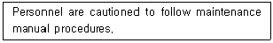
- 정비를 할 때는 상사의 자문을 구한다.
- 정비 교범절차에 따라 주의를 해야 한다.
- 정비 교범절차에 꼭 따를 필요는 없다.
- 정비를 할 때는 사람을 주의해야 한다.
(정답률: 90%)
23. 항공용 볼트의 식별부호 중 알루미늄 합금 볼트의 머리표시는?
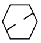
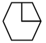
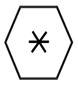
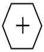
(정답률: 69%)
24. 이질 금속간의 부식은 어느 것인가?
- 응력 부식
- 동전기 부식
- 입자간 부식
- 표면 부식
(정답률: 25%)
25. 항공기 주기작업 시 안전조치에 해당되지 않는 것은?
- 모든 조종면을 중립위치에 고정한다.
- 기관 흡입구나 배기구 및 피토관 등에 덮개를 씌운다.
- 촉(chock)을 바퀴에 고인다.
- 항공기를 계류 로프로 지상에 고정하며 항공기를 접지할 필요는 없다.
(정답률: 87%)
26. 다음 중 금속에서 볼 수 있는 화재는?
- A급 화재
- B급 화재
- D급 화재
- E급 화재
(정답률: 81%)
27. 다이얼 게이지를 사용할 때의 주의 사항 중 틀린 것은?
- 눈금을 읽을 때 눈의 위치에 의한 오차를 주의해야 한다.
- 스핀들의 앞끝을 기준면에 직각으로 접촉시키고 눈금판을 0 에 맞추어야 한다.
- 첨부되어있는 오차선도에서 나타내고 있는 오차 중 가장 큰 범위의 것을 선정하여 사용해야 한다.
- 스핀들을 2~3회 움직여 스핀들과 바늘의 작동상태를 확인해야 한다.
(정답률: 74%)
28. 비파괴검사 시에 변환기, 증폭기, 발전기 등이 필요한 검사법은?
- 와전류검사법
- 초음파탐상법
- 침투탐상검사법
- 자분탐상검사법
(정답률: 56%)
29. 산소 취급 시의 주의사항으로 가장 관계가 먼 것은?
- 산소 자체는 가연성 물질이므로 폭발의 위험보다는 화재에 유의한다.
- 취급장소로부터 15m 이내에서는 인화성 물질을 취급해서는 안 된다.
- 취급자의 의류 또는 공구에 유류가 묻어있지 않도록 한다.
- 액체산소를 취급할 때는 동상에 걸릴 위험이 있으므로 주의한다.
(정답률: 66%)
30. 항공기에 장착된 상태에서 수행하는 정비작업으로 장비품이 규정된 지사와 허용 한계값 내에 있는가를 체크하는 점검은?
- 작동 점검
- 기능 점검
- 벤치 체크
- 주기 점검
(정답률: 48%)
31. 정비작업의 분류에 대한 설명으로 가장 거리가 먼 내용은?
- 정비작업은 크게 정상작업과 특별작업으로 분류한다.
- 정상작업은 항공기 부품과 장비품의 품질유지가 목적이다.
- 특별작업은 항공기 및 관련 장비의 기능변경을 목적으로 하여 설계변경을 시키는 개조 작업을 말한다.
- 개조나 비계획 정비를 특별작업이라 한다.
(정답률: 41%)
32. 일반적인 형광침투시험법으로 검사할 수 있는 것은?
- 편석
- 균열
- 결정용액
- 내부기공
(정답률: 71%)
33. 다음 영문 중 밑줄 친 부분의 내용으로 가장 올바른 것은?
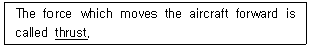
- 연료
- 추력
- 양력
- 중력
(정답률: 90%)
34. 그림은 지상에서 항공기 표준 유도신호를 나타낸 것이다. 신호가 뜻하는 것은?
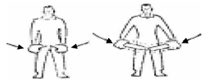
- 속도감소
- 촉 장착
- 정지
- 후진
(정답률: 82%)
35. 그림의 인치식 버니어 캘리퍼스(최소 측정값
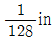
) 눈금을 가장 올바르게 표시한 것은?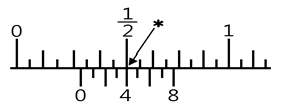
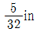
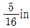
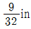
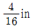
(정답률: 40%)
36. 그림과 같은 응력-변형률 곡선에서 틀린 것은?
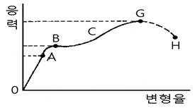
- BC : 비례한도
- B : 항복점
- G : 극한강도
- OA : 후크의 법칙 성립
(정답률: 67%)
37. 날개 윗면의 바깥만 일부를 움직여 도움날개와 같이 비행기를 조종하거나 착륙 활주 중에 스피드 브레이크(Speed Brake)의 역할을 담당하는 장치는?
- 플랩(flap)
- 스포일러(spoiler)
- 도움날개(aileron)
- 슬랫(slat)
(정답률: 82%)
38. 헬리콥터 주 회전날개의 평형작업에 대한 설명으로 가장 관계가 먼 내용은?
- 진동은 회전날개와 기체구조에 커다란 영향을 끼치므로 회전날개는 평형을 맞추어야 한다.
- 주 회전날개의 진동은 시위방향과 길이방향의 평형이 맞지 않을 경우 나타난다.
- 떼어낸 상태에서 회전날개의 평형을 맞추는 것을 정적평형작업이라 한다.
- 동적평형작업이 끝난 후에 정적평형작업을 실시한다.
(정답률: 53%)
39. 전단응력은 서로 직각으로 이웃하는 단면에서 쌍으로 발생하는데, 이것을 전단응력의 무엇이라 하는가?
- 공액관계
- 대치관계
- 평형관계
- 공유관계
(정답률: 42%)
40. 구조형식에 따른 항공기 브레이크 중류에 속하지 않는 것은?
- 팽창 튜브형
- 싱글 디스크형
- 멀티 디스크형
- 스플리트형
(정답률: 65%)
3과목: 항공기체
41. 헬리콥터가 기관의 동력 없이 회전날개의 자유회전에 의해서만 비행하는 상태는?
- 호버링 (hovering)
- 오토 로테이션 (auto rotation)
- 플래핑 (flapping)
- 페더링 (feathering)
(정답률: 73%)
42. 샌드위치 구조형식에서 두 개의 외판사이에 넣는 부재의 형태가 아닌 것은?
- 페일형
- 파형
- 거품형
- 벌집형
(정답률: 34%)
43. 세미모노코크형 항공기 동체구조에서 항공기 길이 방향으로 장착되는 구조 부재는?
- 프레임(Frame)
- 정형재(Former)
- 스트링어(Stringer)
- 벌크헤드(Bulkhead)
(정답률: 67%)
44. 헬리콥터에서 기관이 정상작동을 할 때에는 기관의 출력을 주 회전날개에 전달하지만 기관의 고장이나 출력감소에 의해 기관의 회전이 주 회전날개보다 늦을 경우 기관을 회전날개와 분리되도록 하는 것은?
- 구동축
- 원심클러치
- 오버러닝클러치
- 토크미터
(정답률: 68%)
45. 다음 중 가장 가벼운 금속 원소는?
- Zn
- Mg
- Cr
- Ai
(정답률: 89%)
46. 금속의 표면만을 경화시킬 목적으로 수행하는 표면경화법의 중류에 속하는 것은?
- 주조법
- 침탄법
- 뜨임법
- 연화법
(정답률: 55%)
47. 비행 중 양력으로 인하여 날개에 굽힘(Bending)응력이 발생할 때 날개 아랫면에 작용하는 응력은?
- 인장응력
- 압축응력
- 전단응력
- 비틀림응력
(정답률: 66%)
48. 헬리콥터 동체가 세미모노코크형 구조일 때 구성품에 포함되지 않는 것은?
- 링
- 정형재
- 리브
- 외피
(정답률: 45%)
49. 복합 소재에 쓰이는 강화재가 아닌 것은?
- 유리 섬유
- 탄소 섬유
- 열가소성 수지
- 세라믹 섬유
(정답률: 55%)
50. 미국의 ASTM 규격에서 정한 합금의 종별기호 다음에 붙이는 질별기호에 대한 내용으로 가장 올바른 것은?
- H : 담금질 후 시효경화가 진행 중인 것
- W : 풀림 처리를 한 것
- F : 주조한 그대로의 상태의 것
- O : 가공경화한 것
(정답률: 46%)
51. 항공기를 설계할 때 기체의 강도는 한계하중보다 좀 더 높은 하중에서 견딜 수 있도록 설계하는 이유를 설명한 것으로 가장 관계가 먼 내용은?
- 항공역학 및 구조역학 등의 이론적 계산에서 많은 가정이 있기 때문에
- 재료의 기계적 성질 등이 실제의 값과 약간의 차이가 있기 때문에
- 항공기는 비행 중 한계하중보다 큰 하중을 받는 경우가 많기 때문에
- 제작가공 및 검사방법 등에 따라 측정한 수치에 오차가 발생할 수 있기 때문에
(정답률: 56%)
52. 그림과 같이 크기가 같고 방향이 반대인 두 힘이 수직거리인 d만큼 떨어져 작용하는 짝힘(Couple Force)에 의한 Moment의 크기를 구하면?
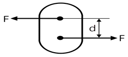
- M = d2 · f
- M = d2 · f2
- M = d · f2
- M = d · f
(정답률: 57%)
53. 재료의 피로(Fatigue)파괴를 가장 올바르게 설명한 것은?
- 재료의 인성과 취성을 측정할 때에 재료의 파괴시점을 측정하기 위한 시험법이다.
- 합금성질을 변화시키려 하는 성질이다.
- 시험편(Test Piece)을 일정한 온도로 유지하고 이것에 일정한 하중을 가할 때 시간에 따라 변화하는 현상이다.
- 재료에 반복하여 하중이 작용하면 그 재료의 파괴 응력보다 훨씬 낮은 응력으로 파괴되는 현상이다.
(정답률: 76%)
54. 쇽스트러트(Shock Strut)의 실린더와 피스톤이 상대적으로 회전하는 것을 방지하고 있는 것은?
- 센터링 캠(Centering Cam)
- 토션 링크(Torsion Link)
- 스트러트내의 작동유
- 번지 스프링(Bungee Spring)
(정답률: 72%)
55. 헬리콥터에서 수직 핀(vertical fin)에 대한 설명으로 가장 관계가 먼 내용은?
- 수직핀은 전진비행 시 수평을 유지시킨다.
- 테일붐 위쪽에 있는 핀은 회전날개에서 발생하는 토크를 상쇄시키는데 기여한다.
- 테일붐 위쪽에 있는 날개골의 형태가 비대칭 구조로 되어 있다.
- 수직핀은 착륙 시 꼬리 회전날개가 손상되는 것을 방지하기 위해 수직 핀 아래쪽에 꼬리회전날개 보호대가 설치되어 있다.
(정답률: 45%)
56. 다음 중 미국 알루미늄 협회에서 사용하는 규격표시는?
- AISI 규격
- SAE 규격
- AA 규격
- MIL 규격
(정답률: 73%)
57. 응력외피형 날개(Wing)의 구조부재 중 전단력과 횡하중을 주로 담당하는 부재는?
- 스티프너(Stiffener)
- 리브(Rib)
- 스킨(Skin)
- 스파(Spar)
(정답률: 44%)
58. 항공기의 무게와 균형의 이론에서 무게의 영향은 직접적으로 어디로부터의 거리에 의해 가장 크게 좌우되는가?
- 항공기의 중심선
- 기체의 중심
- 무게중심
- 항공기의 가로축 중심
(정답률: 53%)
59. 철강합금에서 스테인리스강은 18-8강이라고도 한다. 여기에서 18과 8이 의미하는 것은?
- 크롬과 니켈의 함유량 비율이다.
- 철과 알루미늄 합금 비율이다.
- 철과 탄소의 함유랑 비율이다.
- 철의 강도를 의미한다.
(정답률: 49%)
60. 항공기의 구조시험의 종류가 아닌 것은?
- 낙하시험
- 비행시험
- 피로시험
- 진동시험
(정답률: 59%)
유체의 질량유량은 다음과 같이 구할 수 있다.
입구에서의 유체의 질량유량 = 입구 단면적 x 입구에서의 속도 x 유체의 밀도
출구에서의 유체의 질량유량 = 출구 단면적 x 출구에서의 속도 x 유체의 밀도
입구에서의 유체의 질량유량과 출구에서의 유체의 질량유량이 같으므로,
입구 단면적 x 입구에서의 속도 x 유체의 밀도 = 출구 단면적 x 출구에서의 속도 x 유체의 밀도
입구에서의 속도와 출구에서의 속도는 반비례 관계에 있다. 따라서,
입구 단면적 x 입구에서의 속도 = 출구 단면적 x 출구에서의 속도
8 x 10 = 16 x 출구에서의 속도
출구에서의 속도 = 5m/s
따라서, 정답은 "5"이다.